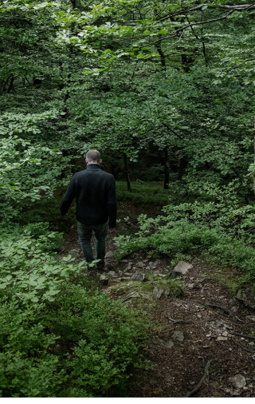
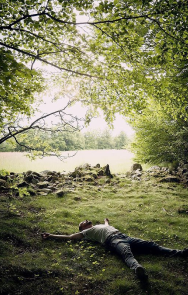

Convergence
of ZEN meditation,
nature & creativity
The majesty of the natural world has always
been integral to Sebastian Mullaert’s music.
His approach to art, as well as to life,
is centered around meditating on nature’s
primordial cycles and forces.
—
Read more

